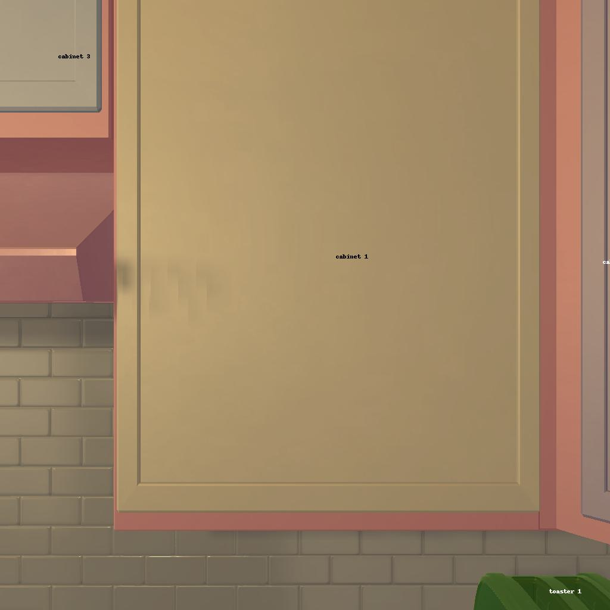

---------------------------------------------------------task: 29---------------------------------------------------------
--------------------------------------------------------------------------------------------------------------------------------------------------------------------
--------------------------------------------------------------------------------------------------------------------------------------------------------------------
Step:--------------------------------------------------------------------------3-------------------------------------------------------------------------------
----------------------------------------
VLM Prompt:
Image1:
**Instruction**
1. Analyze the provided image to identify all visible household objects, focusing on those relevant to the task description "find two tomato and put them in countertop."
2. Use the analysis of the image and the task hint "The agent must find an object of the desired type, pick it up, find the correct location to place it, put it down there, then look for another object of the desired type, pick it up, return to previous location, and put it down there with the other object." to answer the question: what is the most reasonable action in the choices for the task description "find two tomato and put them in countertop"?
4. Decide and write the answer using the template: The answer is: (i): , where i is the real number. If there is no desired object in the image, search every place based on **Initial Observation** to find the object. And if no one is exactly correct, choose a similar answer.
**Initial Observation**
You are in the middle of a room. Looking quickly around you, you can see cabinet (1-20), toaster (1), microwave (1), garbagecan (1), countertop (1-2), drawer (1-4), stoveburner (1-4), sinkbasin (1), sink (1), fridge (1), diningtable (1), coffeemachine (1)
**Answer Choices**
(1): go to cabinet 2
(2): go to cabinet 3
(3): go to toaster 1
(4): go to cabinet 4
(5): go to cabinet 5
(6): go to microwave 1
(7): go to garbagecan 1
(8): go to countertop 1
(9): go to drawer 1
(10): go to cabinet 6
(11): go to cabinet 7
(12): go to drawer 2
(13): go to stoveburner 1
(14): go to stoveburner 2
(15): go to countertop 2
(16): go to cabinet 8
(17): go to cabinet 9
(18): go to cabinet 10
(19): go to drawer 3
(20): go to drawer 4
(21): go to stoveburner 3
(22): go to stoveburner 4
(23): go to cabinet 11
(24): go to cabinet 12
(25): go to cabinet 13
(26): go to cabinet 14
(27): go to sinkbasin 1
(28): go to sink 1
(29): go to cabinet 15
(30): go to cabinet 16
(31): go to cabinet 17
(32): go to cabinet 18
(33): go to cabinet 19
(34): go to diningtable 1
(35): go to coffeemachine 1
(36): go to cabinet 20
(37): open cabinet 1
(38): close cabinet 1
(39): examine cabinet 1
**Answer**
Let's think step by step by following the instructions.
----------------------------------------
----------------------------------------
Original Response:
The task is to find two tomatoes and put them on the countertop. The image provided shows cabinet 3 and cabinet 1, but no visible tomatoes or other objects relevant to the task. Since tomatoes are usually stored in cabinets or refrigerators in a kitchen setting, the most reasonable action would be to search the cabinets. Cabinet 1 is visible but not open, so we cannot confirm if there are tomatoes inside. Cabinet 3 is partially visible, but again we cannot confirm the presence of tomatoes.
Based on the initial observation, there are multiple cabinets (1-20) that could potentially contain tomatoes. The task hint suggests that the agent must search for the desired object. Therefore, the next reasonable action would be to search the cabinets starting with the ones not visible in the image, as we can already see cabinet 1 and cabinet 3 and they are not immediately helpful.
Given the answer choices, the most reasonable action is to search the cabinets that are not visible in the image. Since cabinet 3 is partially visible and cabinet 1 is fully visible but closed, we should start with the next cabinet in sequence.
The answer is: (4): go to cabinet 4. If there are no tomatoes in cabinet 4, then continue searching the cabinets in numerical order until the tomatoes are found.
----------------------------------------
----------------------------------------
>>> Refine Original VLM Response and Get Pure Action: go to cabinet 4
----------------------------------------
-----------------------------------------------------------------
Running time: 20.856520891189575 seconds
Total Money: 10.447180000000007
-----------------------------------------------------------------
-----------------------------------------------------------------
Text Observation:You arrive at loc 4. The cabinet 4 is closed.
-----------------------------------------------------------------
UNSUCCEED